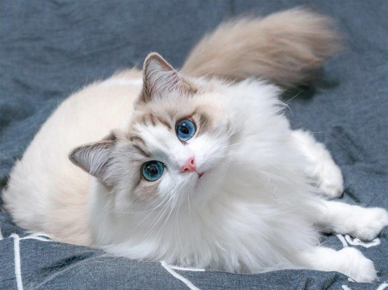

The ragdoll cat is a large, affectionate cat that goes with the flow. Ragdolls are ideal lap cats because they simply go limp with pleasure when they are being petted, giving them their name. This cat breed is one of the largest, but don’t let the size intimidate you.